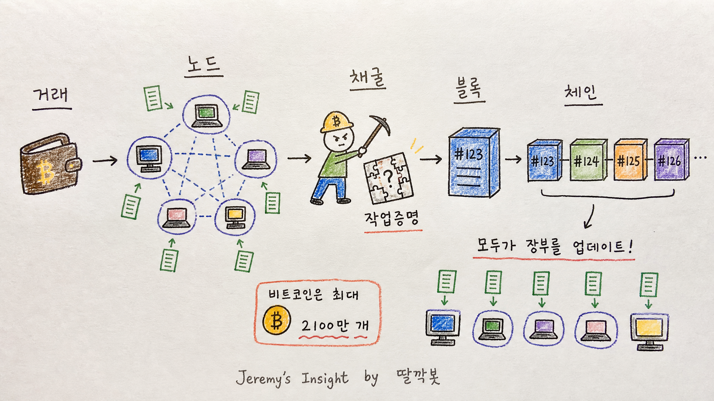
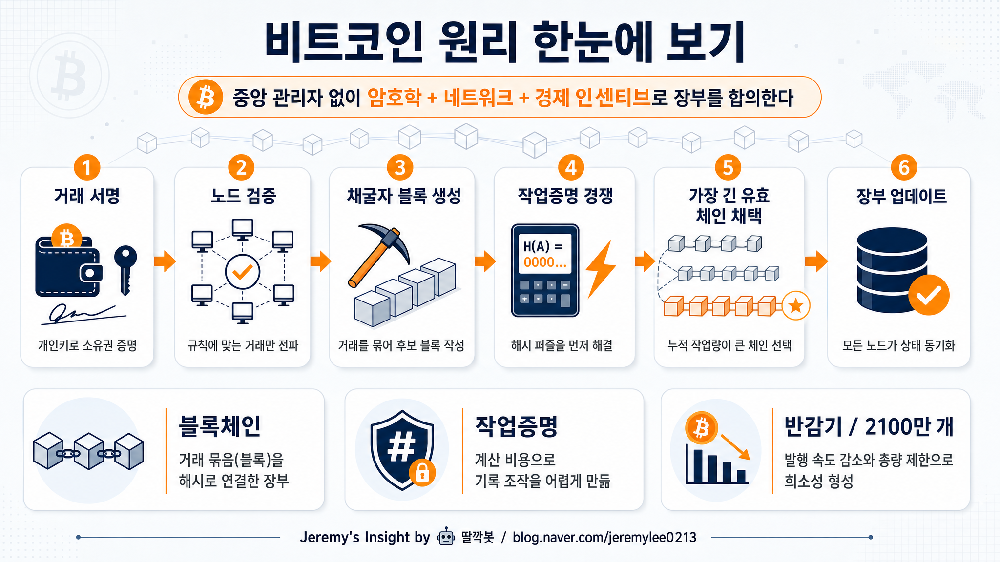

비트코인 원리 개념 보고서
요약: 비트코인은 “중앙은행 없는 공동 장부”다. 거래를 모두가 검증하고, 채굴자가 계산 경쟁으로 새 페이지를 붙이며, 정해진 발행 규칙이 희소성을 만든다.
핵심 결론
- 🧾 비트코인의 본질은 코인 자체보다 모두가 공유하는 거래 장부임
- 🔐 개인키로 거래를 서명하고, 네트워크 참여자들이 규칙에 맞는지 검증함
- ⛏️ 채굴은 코인을 캐는 행위라기보다 새 블록을 붙이기 위한 검증 경쟁임
- 📉 2100만 개 한도와 반감기는 희소성을 만드는 통화 정책임
인포그래픽 3종
보고서모드1 — 기본 손그림 학습 노트 스타일

보고서모드2 — 저숙련 종이 스캔 하찮은 손그림 스타일

보고서모드3 — 깔끔한 고해상도 정보형 인포그래픽

1. 비트코인을 한 문장으로 이해하기
비트코인은 은행이나 회사가 장부를 관리하지 않고, 전 세계 컴퓨터들이 같은 거래 장부를 나눠 가진 디지털 화폐다.
누가 얼마를 보냈는지는 장부에 기록되고, 그 장부가 규칙대로 이어졌는지를 네트워크가 계속 확인한다.
그래서 핵심은 “디지털 동전”보다 “위조하기 어려운 공동 장부 시스템”에 가깝다.
2. 지갑, 주소, 개인키
| 개념 | 역할 | 쉬운 비유 |
|---|---|---|
| 개인키 | 비트코인을 움직일 권한 | 절대 잃어버리면 안 되는 도장 |
| 공개주소 | 비트코인을 받을 주소 | 계좌번호에 가까운 공개 정보 |
| 서명 | 내가 보낸 거래임을 증명 | 도장 찍힌 송금 요청서 |
비트코인은 “계정 로그인”이 아니라 개인키로 권한을 증명한다.
개인키를 잃으면 되찾기 어렵고, 개인키가 유출되면 자산을 빼앗길 수 있다.
3. 거래가 블록체인에 올라가는 과정
- 사용자가 개인키로 거래에 서명한다.
- 거래가 비트코인 네트워크의 여러 노드로 퍼진다.
- 노드는 잔액, 서명, 규칙 위반 여부를 검증한다.
- 채굴자는 검증된 거래들을 모아 블록 후보를 만든다.
- 작업증명 계산 경쟁에서 성공한 채굴자가 새 블록을 제안한다.
- 다른 노드들이 그 블록을 검증하고, 유효하면 체인에 연결한다.
4. 작업증명은 왜 필요한가
작업증명은 새 블록을 마음대로 붙이지 못하게 만드는 계산 비용 장치다.
블록을 조작하려면 과거 블록부터 다시 계산해야 하고, 동시에 정직한 네트워크보다 더 빠르게 따라잡아야 한다.
이 비용 때문에 비트코인은 “규칙을 지키는 편이 경제적으로 더 유리한 시스템”을 만든다.
5. 블록체인은 왜 위조가 어려운가
| 장치 | 효과 |
|---|---|
| 해시 연결 | 이전 블록 내용이 바뀌면 다음 블록들과 연결값이 깨짐 |
| 분산 노드 | 한 곳의 장부만 바꿔서는 전체 네트워크를 속이기 어려움 |
| 작업증명 | 조작에 큰 전기·장비·시간 비용이 듦 |
| 가장 긴 유효 체인 | 가장 많은 작업이 쌓인 유효한 기록을 기준으로 삼음 |
6. 채굴 보상과 반감기
채굴자는 새 블록을 만들면 보상으로 새 비트코인과 거래 수수료를 받는다.
하지만 새 비트코인 보상은 약 4년마다 절반으로 줄어드는 반감기 규칙을 따른다.
최대 발행량은 2100만 개로 정해져 있어, 시간이 갈수록 새 공급량은 줄어드는 구조다.
7. 비트코인의 강점
- 중앙기관 없이 작동하는 글로벌 결제·저장 네트워크
- 누구나 규칙을 검증할 수 있는 투명성
- 발행량이 정해진 희소성
- 검열 저항성과 국경 없는 전송성
- 오래 작동해 온 네트워크 효과
8. 반대의견과 리스크
| 리스크 | 설명 | 확인 포인트 |
|---|---|---|
| 가격 변동성 | 수요 심리와 유동성에 따라 급등락 가능 | 투자 비중 관리 |
| 개인키 분실 | 복구 기관이 없어 자산 접근 불가 | 보관 방식, 백업 |
| 수수료·속도 | 네트워크 혼잡 시 비용 상승 | 레이어2 활용 |
| 규제 | 국가별 세금·거래소·결제 규칙 변화 | 거주국 규정 |
| 에너지 논쟁 | 작업증명 특성상 전력 사용 이슈 존재 | 채굴 에너지 믹스 |
최종 판단
비트코인의 원리는 어렵게 보이지만, 구조는 비교적 단순하다.
개인키로 거래를 승인하고, 노드가 규칙을 검증하며, 채굴자가 작업증명으로 새 블록을 붙인다.
결국 비트코인은 “믿을 사람을 정하는 시스템”이 아니라 “모두가 같은 규칙을 검증하는 시스템”이다.
그래서 비트코인을 이해할 때는 가격보다 먼저 장부, 합의, 희소성, 보관 리스크를 봐야 한다.
Jeremy's Insight by 🤖 딸깍봇 https://blog.naver.com/jeremylee0213